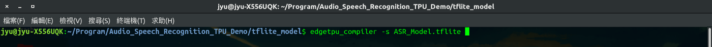
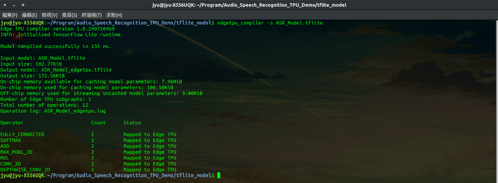
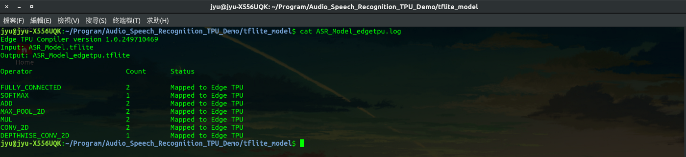
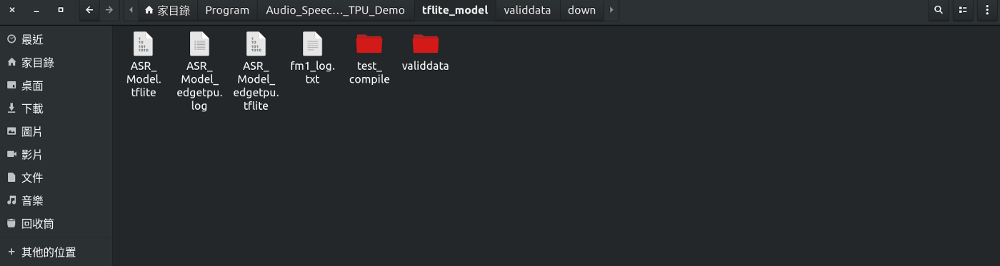

GitHub：https://github.com/s123600g/asr_edgetpu_demo
經過(四) 模型轉換格式為tflite，此階段進行使用 edgetpu_compiler 轉換EdgeTpu可識別tflite模型。
因應在官方說明文件TensorFlow models on the Edge TPU區塊提到，要能夠讓EdgeTpu能識別使用之tflite模型，必須要先將一個包含fake qnantization nodes的模型(type float 32)，經過 Quantization-aware training 量化感知訓練後，產生一個量化模型(pb model , type uint8)，經過 Frozen Graph 處理與Convert(TOCO)，最後，透過 edgetpu_compiler 指令轉換成EdgeTpu可識別模型(tflite)。
參考官方說明文件 - Edge TPU Compiler： https://coral.withgoogle.com/docs/edgetpu/compiler/
在官方說明文件中 Download 區塊，進行安裝 edgetpu_compiler 指令工具。 安裝之前請先查看 System requirements 區塊，確認都有符合環境要求。
在官方說明文件中 Usage 區塊，提到 edgetpu_compiler 指令操作與項目說明
指令格式如下：
edgetpu_compiler [options] model...
首先，要先確認使用轉換的tflite模型來源。
在專案目錄內tflite_model/ASR_Model.tflite
edgetpu_compiler 參考指令格式：
edgetpu_compiler -s model
-s ，功用為在執行過程中顯示轉換訊息與產生訊息紀錄檔案。edgetpu_compiler 專案實際執行指令：
edgetpu_compiler -s /home/jyu/Program/Audio_Speech_Recognition_TPU_Demo/tflite_model/ASR_Model.tflite


預設轉換後 EdgeTpu 模型位置會在終端機目前位置底下。
轉換後會產生2個檔案如下：
1. ASR_Model_edgetpu.log –> 轉換過程訊息紀錄檔案
透過指令cat查看ASR_Model_edgetpu.log內容
cat ASR_Model_edgetpu.log

2. ASR_Model_edgetpu.tflite - - > 轉換後EdgeTpu模型

接下來就可以進行(六) 進行 EdgeTpu 模型預測。